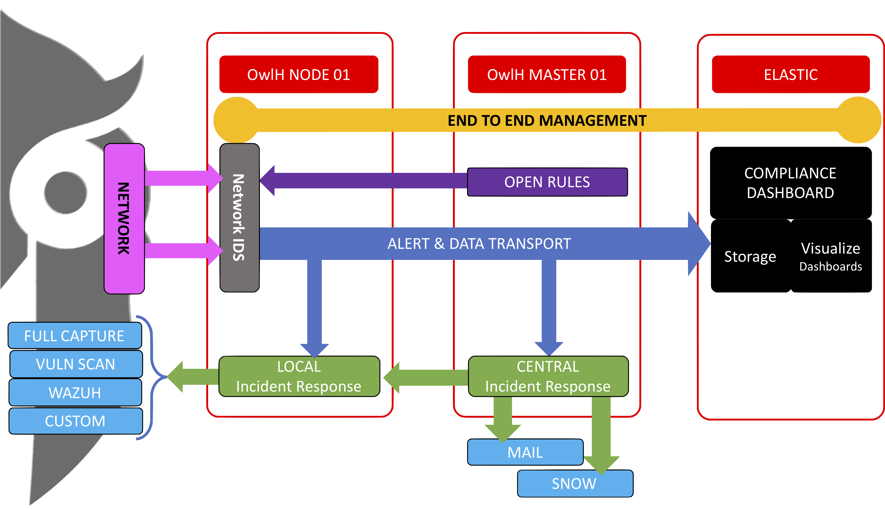

How does it work?¶
Main components¶
- OwlH NIDS node
- OwlH Master node
- Elastic stack
OwlH NIDS node¶
This appliance run the Network IDS software. OwlH supports Suricata Network IDS and will support BroIDS on next releases. Usually, best approach is to run a network IDS node as only network IDS so there is no other services or production environment tools working on it that are not related with traffic collection and analysis.
Main role of this appliance is to listen traffic, analyze captured traffic using the ruleset provided and send the alerts to the master node. Also OwlH will include a capability to run actions in response to detected alerts.
With OwlH you can deploy this OwlH NIDS node from scratch or you can include an integrate any deployed Network IDS node. Supported platforms are Debian Stretch and CentOS 7.
- deploy as appliance
- deploy as a service in a running Network IDS probe.
OwlH Master node¶
Centralized management will provide you an easy way to maintain your Network IDS probes. Among others, Master node will provide centralized rule management based on Open Rules solution, probes status Monitoring, configuration management, etc.
This should be an appliance, you can deploy different managers in parallel as a cluster. The OwlH master software can also run into Wazuh Manager if you will use OwlH together with Wazuh.
Elastic Stack¶
Data Transport is done in two possible ways.
- By using Wazuh agent
- By using OwlH forwarder and collector tools
- By using Beat solutions like filebeat or logstash
If you need help:¶
- email our support team - support@owlh.net
- visit our mailing list - OwlH mailing list (owlh@googlegroups.com)
OwlH - current v0.4 - May : Bro integration and AWS and GCloud support